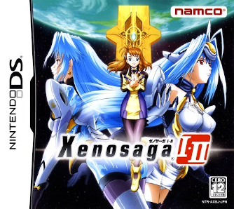
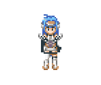
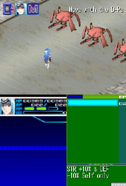
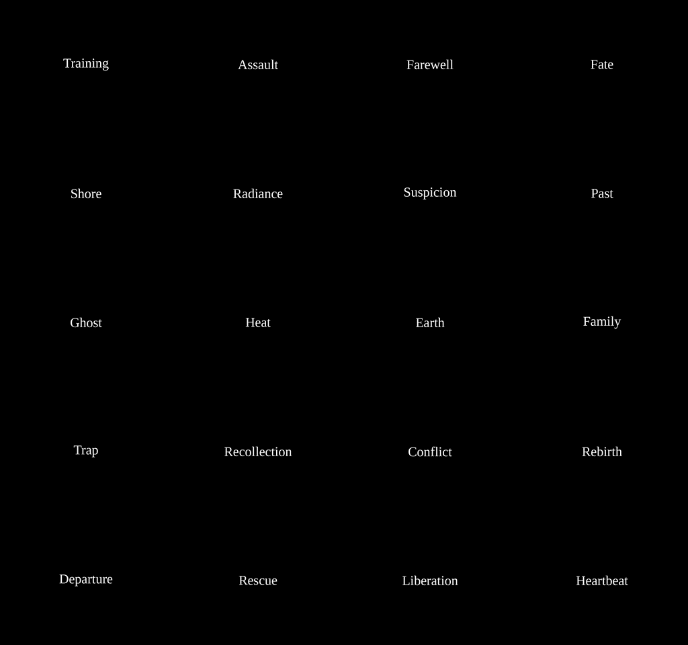

0
PLAYER-FACING EVC JP
Structured scans report zero Japanese in the supported player-facing normal, KJM/title and deep-EVC layers.


The complete English Nintendo DS localization. Story, choices, chapter cards, battle UI, item descriptions and the opening tutorial path come together in v1.0 Final.
The browser verifies your clean Japanese ROM, applies the final English v1.0 BPS locally, verifies the generated ROM and gives it back to you. Your ROM never leaves your device.
Supported clean ROM only · expected size 64 MiB
SHA-256 source verification is mandatory.
Output SHA-256 verified:
5cfe164aea57174ad47801e90f7fd53dccca4d30db2680991d54ec232aac4a61
DOWNLOAD PATCHED ROM
938d07521cfc937d179402e85c8b0b43f3e929a494838ff1455b29126b56d356d0188e2abf13ba81496ec0e387ad3eba3180c7b65af61c2a0dbac96efa71919e5cfe164aea57174ad47801e90f7fd53dccca4d30db2680991d54ec232aac4a61Mobile patching works where browser memory allows it. Desktop remains the safest option for a 64 MiB ROM plus patch buffers.
The final build was tested from cold boot through New Game, the YES warm-up/tutorial route and the first battle. The battle type display now uses P = Physical and E = Ether, with no Japanese glyph residue in the tested battle path.

Structured scans report zero Japanese in the supported player-facing normal, KJM/title and deep-EVC layers.
Mechanically safe one-word-tail dialogue blocks were reflowed without changing the underlying words or event spans.
The actual battle spritebank now renders Physical and Ether as P and E.

This is the English branch of the Xenosaga I+II DS localization project. The completed Dutch localization remains separate, with its own release and site.
Xenosaga I+II DS Nederlands v1.0.17 lives at its own canonical subdomain.
OPEN DUTCH SITE